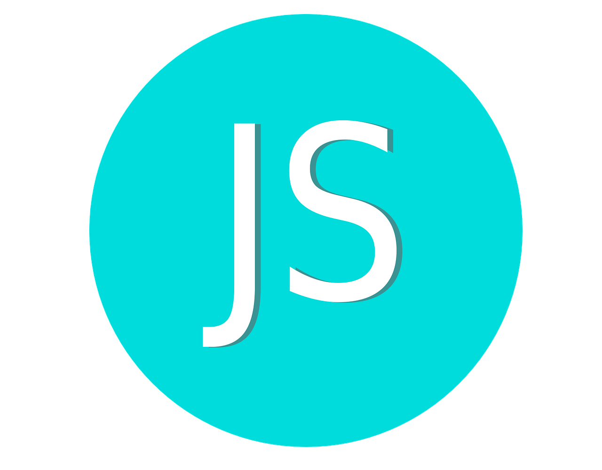

Java Script - 
JavaScript é uma das principais linguagens de programação voltadas para o desenvolvimento web. Criada inicialmente para dar interatividade a páginas da web, ela cresceu muito e hoje é uma linguagem de propósito geral, sendo usada tanto no lado do cliente (front-end) quanto no lado do servidor (back-end), especialmente com o Node.js.
1. Interpretação e Execução
JavaScript é uma linguagem interpretada, o que significa que o código é executado diretamente em um ambiente de execução, sem necessidade de
compilação prévia.
Ela é executada principalmente em navegadores, mas também pode ser executada em servidores através de ambientes como o Node.js.
2. Sintaxe
A sintaxe de JavaScript é bastante acessível e parecida com outras linguagens, como Java e C.
Ela permite declarar variáveis, criar funções, estruturas de controle como if, while, for, entre outras.
3. Linguagem Dinâmica e Tipagem Fraca
JavaScript é dinâmico, ou seja, o tipo de uma variável é determinado em tempo de execução e pode ser alterado a qualquer momento.
Sua tipagem é considerada fraca, o que significa que as variáveis podem mudar de tipo facilmente, e há uma conversão automática entre diferentes
tipos quando necessário.
4. Orientada a Objetos por Prototipagem
Ao contrário de linguagens orientadas a objetos tradicionais que utilizam classes (como Java ou C++), JavaScript usa prototipagem. Isso significa
que os objetos podem herdar diretamente de outros objetos.
A partir do ECMAScript 6 (ES6), JavaScript introduziu a sintaxe de classes, facilitando o uso da orientação a objetos.
5. Eventos e Manipulação de DOM
Um dos principais usos do JavaScript é a manipulação do DOM (Document Object Model), o que permite modificar a estrutura de uma página HTML em
tempo real.
Também trabalha com eventos (como cliques, movimentação do mouse, envio de formulários), tornando as páginas interativas.
6. Funções e First-Class Citizens
Em JavaScript, funções são primeira classe (first-class citizens), o que significa que elas podem ser atribuídas a variáveis, passadas como
argumentos para outras funções, e retornadas de funções.
Isso permite o uso de funções de callback e funções anônimas, muito comuns para operações assíncronas e manipulação de eventos.
7. Programação Assíncrona
JavaScript lida muito bem com a programação assíncrona, graças a estruturas como promises e o padrão async/await, que facilitam o gerenciamento
de operações que levam tempo, como chamadas de API e operações de banco de dados.
8. Compatibilidade com Bibliotecas e Frameworks
JavaScript possui um ecossistema vasto de bibliotecas e frameworks que ajudam no desenvolvimento de aplicações. Exemplos incluem:
React, Vue.js e Angular para o desenvolvimento front-end.
Node.js, Express para desenvolvimento de back-end.
jQuery, uma biblioteca mais antiga para manipulação mais simples do DOM (hoje substituída por frameworks modernos).
9. ECMAScript
JavaScript é baseado na especificação ECMAScript, sendo o ECMAScript 6 (ES6) uma das versões mais importantes, introduzindo melhorias como:
Declaração de variáveis com let e const.
Sintaxe de classes.
Arrow functions (=>).
Template strings.
Desestruturação de arrays e objetos.
Importação/exportação de módulos.
10. Uso em Back-end com Node.js
Com o Node.js, JavaScript ultrapassou a barreira do front-end e se consolidou como uma linguagem poderosa para o desenvolvimento de aplicações
no lado do servidor. Isso significa que pode ser usado para criar APIs, realizar operações de banco de dados, manipular arquivos, entre outros.
11. Compatibilidade com JSON (JavaScript Object Notation)
JavaScript lida de forma nativa com JSON, que é o formato de dados mais usado para intercâmbio de informações entre aplicações web, facilitando
a comunicação com APIs e bancos de dados.
12. Carreira e Comunidade
O JavaScript é uma das linguagens mais populares do mundo, e o conhecimento dela é essencial para qualquer desenvolvedor web.
Sua comunidade é ativa e tem um vasto número de recursos, como bibliotecas open-source, fóruns, cursos, e tutoriais disponíveis online.